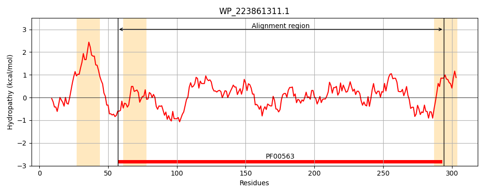
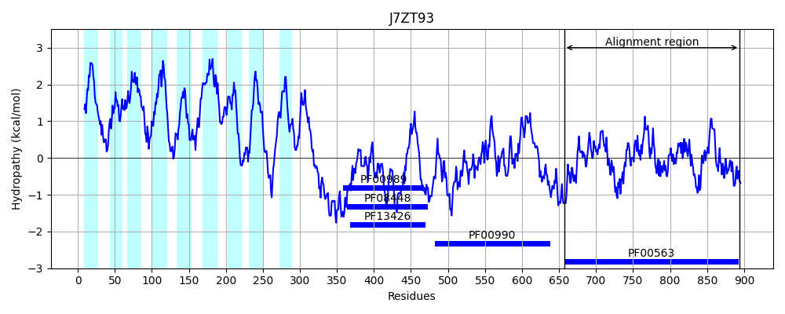
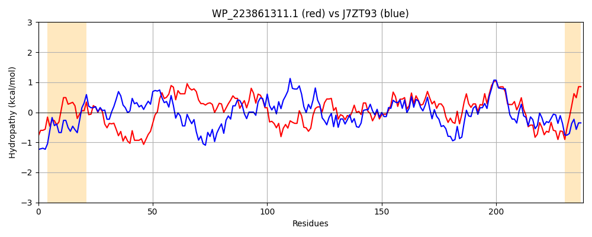

Hit Accession: J7ZT93
Hit TCID: 9.B.34.1.5
Hit Description: gnl|BL_ORD_ID|5486 gnl|TC-DB|J7ZT93|9.B.34.1.5 Diguanylate cyclase (GGDEF) domain-containing protein OS=Bacillus cereus HuA2-4 GN=IG7_01488 PE=4 SV=1
Mach Len: 238
e:0.000000
Query TMS Count : 3
Hit TMS Count: 9
TMS-Overlap Score: 0.000000
Predicted Substrates:None
BLAST Alignment:
Score: 361 , Bit scores: 143 bits, E-value: 3.0e-38, Alignment length: 238, Percentage identity: 34
Query: 57 EENLRYAIAQGYIVPFYQPVVNGKTGEIYGVEILARWKNATTQRRSPAEFIPLAERTGLIIPLTRSLMAQVAAQMNPIFSKLPDGFHIGLNISVSHINAPSFIDDCLHYQRGFEGKAVKLMLEITEQEPLLLNDAVVDKLNTLHSRGFSIALDDFGTGYSGLSCLHELIFDYIKIDQSFVGRVTGEAPSSKLLDCVIEMARTLSLRIIAEGVETQVQLEYLNRQNIHLLQGYYFWKPM 294
E++L A+ + YQP V+ KTG + G E L RW++ SP EFIP+AE T II + + + + Q+ S +G+N+S F+ + A + LE+TE+ ++ + KL L S G +++DDFGTGYS L+ L D +KI + FV R+ ++++ +I +A TL++++IAEGVET+ QL L R +L+QGYY+ KP+
Sbjct: 657 EQDLPKALENNELFLLYQPQVDSKTGMVIGAEALIRWQHPELGLISPFEFIPIAEETSQIISIGKWTLQEACRQLKEWHSAGYVNLKMGINLSAIEFEQKDFVQAIISTIEEVGVPASSIDLELTERIAMVDEKETLAKLKALKSYGVHLSIDDFGTGYSSLAYLPLYPIDTLKIPREFVNRIGNSTDGNEIIHTIISLAHTLNMKVIAEGVETKEQLTVLQRNACYLIQGYYYSKPV 894 | Protein Hydropathy Plots: |
|---|
|  |  |
Pairwise Alignment-Hydropathy Plot:
|
|---|
|  |